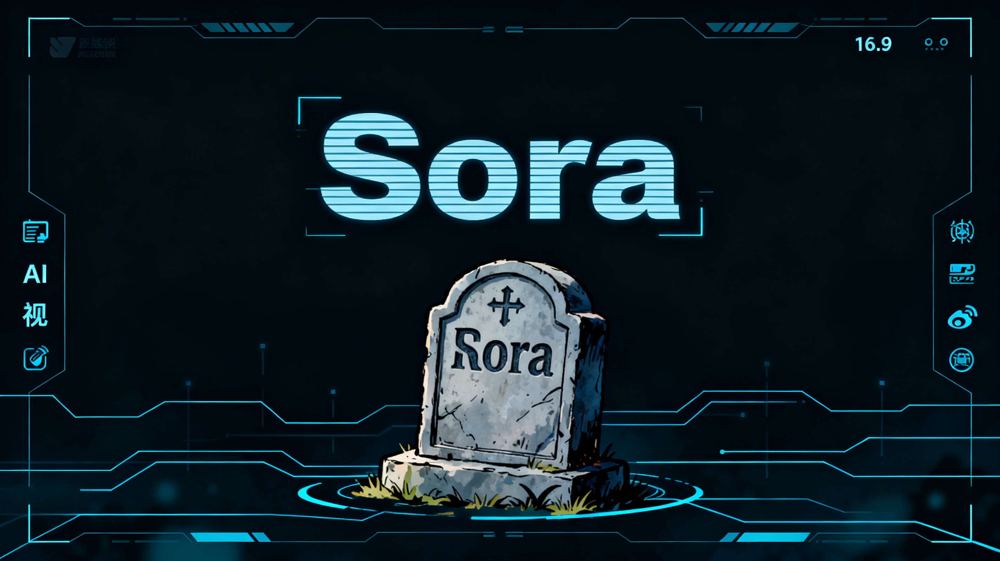
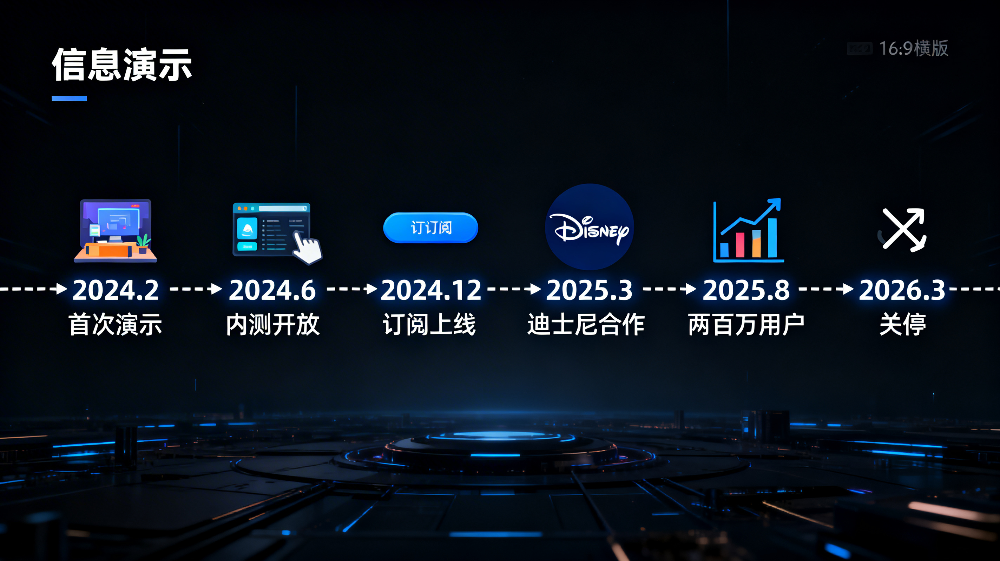
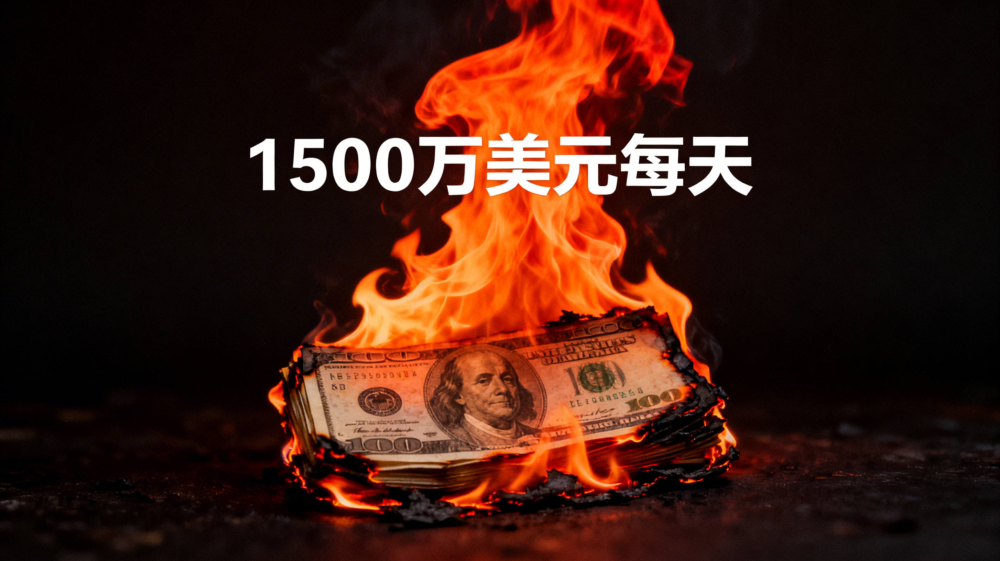
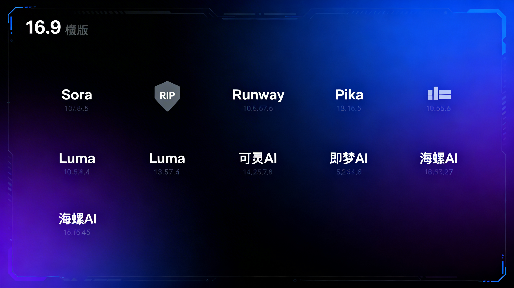

2026 年 3 月 25 日，周二。
对于 OpenAI Sora 团队的 200 多名工程师来说，这是职业生涯中最黑暗的一天。
上午 10 点，全员会议紧急召开。OpenAI 管理层宣布：Sora 服务将于 30 天后正式关闭，用户数据可导出，订阅费用按比例退还。
消息传出，硅谷震动。

Sora 25 个月发展历程
| 时间 | 事件 |
|---|---|
| 2024 年 2 月 | Sora 首次公开演示，60 秒视频生成惊艳全球 |
| 2024 年 6 月 | 邀请制内测开放，排队用户超 50 万 |
| 2024 年 12 月 | 正式订阅制上线，定价$30/月 |
| 2025 年 3 月 | 迪士尼宣布战略合作，计划用于电影前期可视化 |
| 2025 年 8 月 | 用户突破 200 万，日均生成视频 50 万条 |
| 2026 年 3 月 | 突然宣布关停，团队解散 |

根据《每日经济新闻》披露的数据，Sora 平均每天燃烧 1500 万美元。
这是什么概念？
OpenAI 的 IPO 招股书显示，Sora 的营收贡献不足 3%，却消耗了 40% 的算力资源。
Sora 采用订阅制收费：
| 套餐 | 价格 | 包含额度 | 实际成本 |
|---|---|---|---|
| 基础版 | $30/月 | 30 条视频 | 成本约$150 |
| 专业版 | $300/月 | 300 条视频 | 成本约$1500 |
| 企业版 | $3000/月 | 无限生成 | 成本约$15000+ |
视频生成需要海量 GPU 推理。根据用户实测，生成一条 10 秒 1080p 视频，需要：
而用户付费仅$1。
这不是生意，这是慈善。
Sora 之死，背后是 OpenAI 内部的技术路线分歧。
LLM 路径：ChatGPT/GPT-5 → 商业化清晰 ✅
AGI 路径：Sora/多模态 → 技术探索优先 🔬
"资源应该集中在 ChatGPT 和 GPT-5，这些产品有清晰的盈利模式"
—— 支持 LLM 路径的高管
"Sora 是多模态能力的核心，放弃 Sora 就是放弃 AGI"
—— 支持 AGI 路径的研究员
最终，IPO 压力让资本战胜了理想。
据知情人士透露，关停决定宣布前一晚，Sora 团队还在和迪士尼高层开会，讨论 2026-2027 年的深度合作计划。
第二天，迪士尼收到了关停通知。
"深感震惊"——这是迪士尼发言人的公开表态。
背后是好莱坞的无奈：大量制片厂已将 Sora 纳入前期可视化流程，突然关停打乱了多个项目计划。
Sora 关停后，最大受益者来自竞争对手：
| 工具 | 国家 | 优势 | 估值变化 |
|---|---|---|---|
| Runway Gen-3 | 美国 | 技术成熟，好莱坞认可 | +40% |
| Pika 1.5 | 美国 | 社区活跃，免费额度多 | +60% |
| Luma Dream Machine | 美国 | 速度快，成本低 | +80% |
Luma 官方宣布：Sora 用户迁移可享 3 个月免费专业版。
Sora 关停，给国产 AI 视频工具留下巨大市场真空：

主流 AI 视频生成工具对比
Sora 的技术实力毋庸置疑。
在多项基准测试中，Sora 的视频质量、物理一致性、长程依赖处理都领先行业 1-2 年。
但技术优势无法弥补商业模式的缺陷。
Sora 的困境，本质是 AI 视频行业的共性问题：
收入 = 用户数 × 付费率 × ARPU 成本 = 用户数 × 人均使用量 × 单次成本 当 单次成本 > ARPU 时 增长越快，死亡越快
Sora 退出后，行业出现 12-18 个月的窗口期：
谁能抓住这次机会？
如果你是用 AI 视频工具进行创作，建议：
不要依赖单一工具，建立工具矩阵：
主力工具（60%）：可灵 AI / Runway 备用工具（30%）：即梦 AI / Pika 探索工具（10%）：海螺 AI / Luma
将重要视频下载到本地，避免云端数据丢失。
选择工具时，不仅看生成质量，还要评估：
2024 年 2 月，Sora 第一条演示视频发布时，全网沸腾。
那段 60 秒的视频里，有我们对 AI 视频的所有想象：电影、广告、游戏、教育……
25 个月后，Sora 倒在了商业化的路上。
但 AI 视频的梦想，没有死。
Runway、Pika、可灵、即梦……这些名字正在接过 Sora 的火炬。